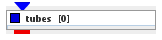
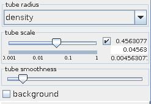
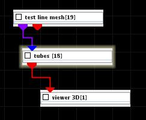
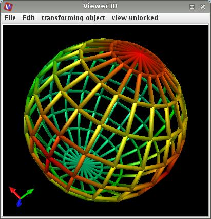

|
|
|

for each segment type cell creates a tube around it with constant or data dependent radius
| input port | type | description | data acceptors |
|---|---|---|---|
| inField | VNField | Irregular Field 3-space |
|
| output port | type | description | data schemas |
| outObj | VNGeometryObject | Output of geometry object for 3D rendered volume |
Tubes
The module creates around each line segment of external surface a tube with constant or data dependent radius.
Input data
The input field is irregular 3-space.
Output data
The output is a geometry object.
Presentation parameters

The appearence of the tube is described by the tube radius, tube scale and tube smoothness parameters.
The value of the component defined in the tube radius drop down list determines the value of the radius of the tube. If the choice is null the radius is one size.
The tube scale slider allows to scale the size of the radius. If check box on the right hand side is on the user can change minimum, maximum and current value typing the values into the text fields.
The tube smoothness slider defines the smoothness of the geometry of the tubes.
If background check box is on the tubes are drawn in black as background for the line grid of the original data.
Further presentation parameters are described in the common interfaces section under the Presentation Panel entry.
Example

Choose test line mesh module from test objects library and tubes module from general mappers and accessories library and connect them. In tubes module GUI choose for tube radius null and an appropriate value for tube scale. For color component choose v.
